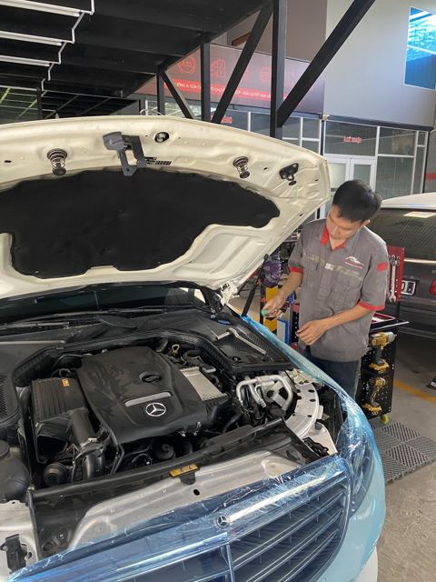
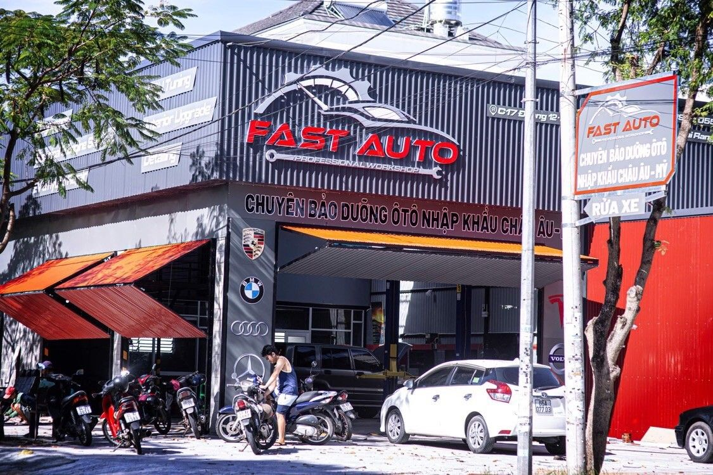
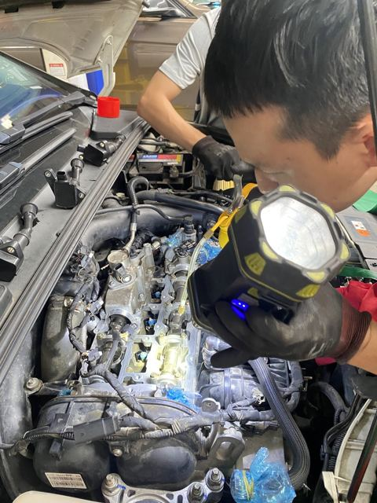
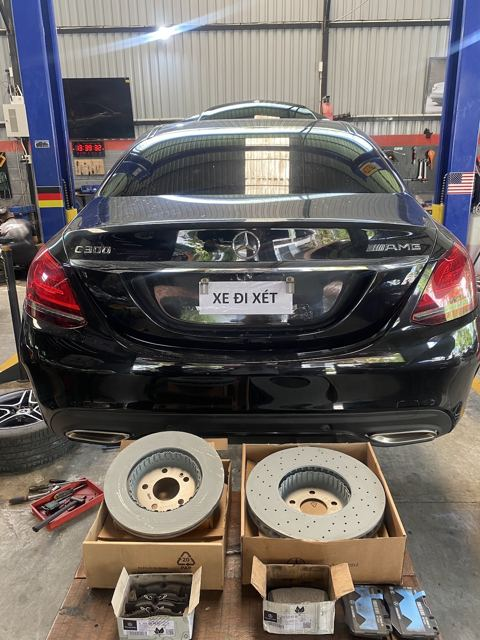
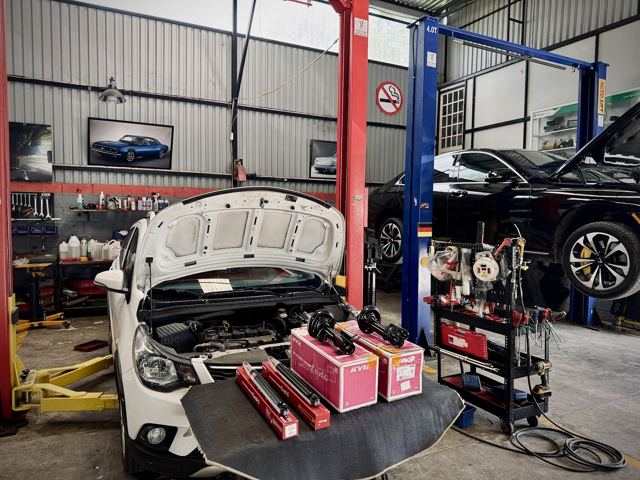
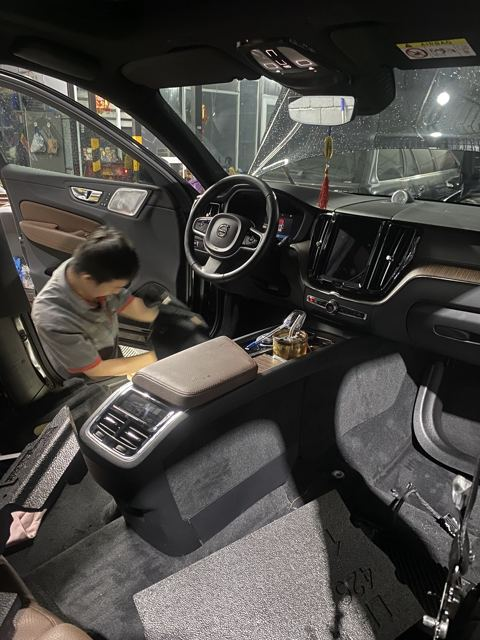
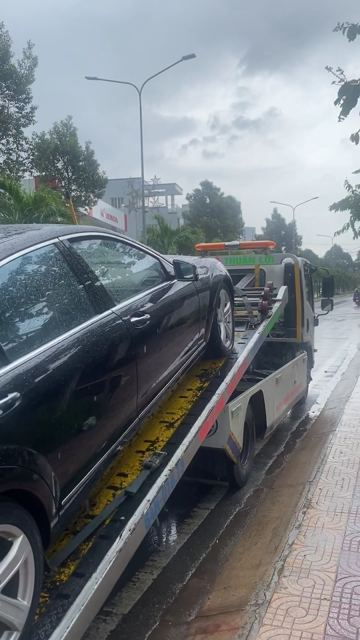

Bảo dưỡng định kỳ
Thay dầu, lọc, dung dịch làm mát; kiểm tra động cơ, hộp số, phanh, lái, treo; reset đèn báo bảo dưỡng.

C17 Nguyễn Thái Sơn · KDC Hưng Phú 1 · Cần Thơ
Sửa chữa, bảo dưỡng định kỳ, chẩn đoán và lập trình điện tử, phụ tùng chính hãng cho BMW, Mercedes, Audi, Lexus, Land Rover, Porsche, Ford… ngay tại Cái Răng, Cần Thơ.
07:30–17:00 Thứ Hai – Thứ Bảy · Chủ Nhật nghỉ

Dịch vụ
Kiểm tra kỹ, giải thích rõ lỗi trước khi sửa, báo giá minh bạch.

Thay dầu, lọc, dung dịch làm mát; kiểm tra động cơ, hộp số, phanh, lái, treo; reset đèn báo bảo dưỡng.
Đọc – xóa lỗi ECU, TCU, ABS, SRS; cập nhật phần mềm, coding, lập trình chìa khóa. Khách khen "quét lỗi nhanh, chuẩn".

Sửa chữa hệ thống gầm, thay đĩa – má phanh, cân chỉnh góc lái, kiểm tra lốp.

Order phụ tùng theo số VIN, nguồn Mỹ, Đức, Nhật, Hàn, Thái; báo giá trước khi đặt.

Bọc ghế da, màn hình, camera 360; mở khóa tính năng ẩn bằng phần mềm.

Gọi garage để được tư vấn hỗ trợ đưa xe về. Khách từng "xe hư giữa đường, gọi cứu hộ" và được xử lý "nhanh gọn".
Bảng giá: gọi 0939 198 196 để được báo giá theo đời xe và tình trạng thực tế.
BMW · Mercedes-Benz · Audi · Lexus · Land Rover · Porsche · Ford · Cadillac · Tesla
Xưởng dịch vụ
Ảnh thật tại garage. Bấm vào ảnh để xem lớn.
Vì sao chủ xe chọn FAST AUTO
Đánh giá Google
★★★★★"Sài Gòn về Miền Tây nghĩ Lễ, xe gặp sự cố nên liên hệ ngay Fast Auto Cần Thơ hỗ trợ phục hồi để về lại Sài Gòn. Đội ngũ kỹ thuật phục vụ tận tâm và chi phí rất hợp lý."
★★★★★"Đã đến bão dưỡng con BMW. Phục vụ nhanh nhiệt tình. Lần sau đến kỳ sẽ liên hệ đặt hẹn trước với anh chủ dễ thương"
★★★★★"Anh em chơi Bim Mẹc ghé đây đúng bài, quét lỗi nhanh, thợ nhiệt tình vui vẻ, giá phụ tùng hợp lý"
★★★★★"Xe hư giữa đường, gọi cứu hộ mà trúng ngay auto xịn thật sự, cách làm việc cực kì chuyên nghiệp, giá hợp lí, mà quan trọng là nhanh gọn, rất oke nhé."
Đến garage
C17 Đường Nguyễn Thái Sơn, KDC Hưng Phú 1, Hưng Phú, Cái Răng, Cần Thơ
| Thứ Hai | 07:30 – 17:00 |
| Thứ Ba | 07:30 – 17:00 |
| Thứ Tư | 07:30 – 17:00 |
| Thứ Năm | 07:30 – 17:00 |
| Thứ Sáu | 07:30 – 17:00 |
| Thứ Bảy | 07:30 – 17:00 |
| Chủ Nhật | Nghỉ |
Nên gọi hẹn trước để garage chuẩn bị cầu nâng và phụ tùng cho xe của bạn.